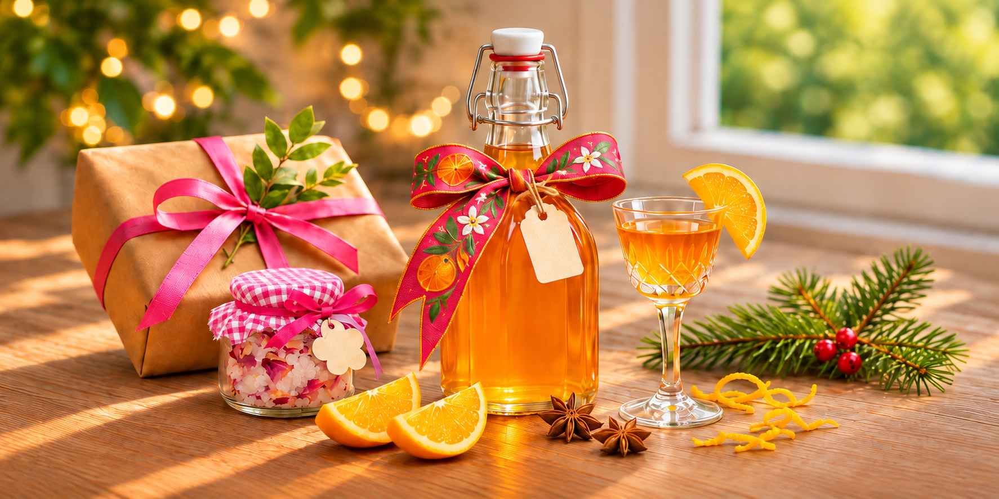

Konceptet omkring bloggen
På Grønne Gaver deler jeg idéer til hjemmelavede gaver, du kan lave med det, du allerede har. Et tomt syltetøjsglas kan blive til en gave med krydderurtesalt, og en rest gavepapir kan foldes til små kuverter med frø fra haven.
Her finder du enkle guides, der viser, hvad du skal bruge, og hvordan du gør. Du kan tilpasse idéerne efter, hvad du har i køkkenskabet, i haven eller i vindueskarmen. Måske har du allerede det meste. Hvis der mangler noget, kan du supplere med lidt.
Jeg hedder Sus-Maj, og jeg har lavet Grønne Gaver for at gøre det nemmere at give noget personligt uden at bruge en formue. Begynd med én idé, du har lyst til at prøve.